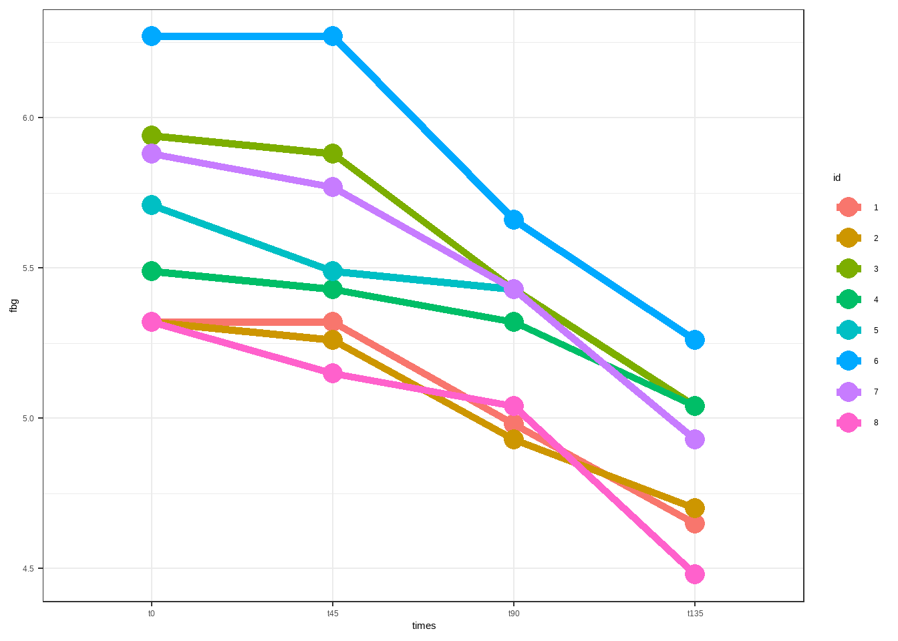
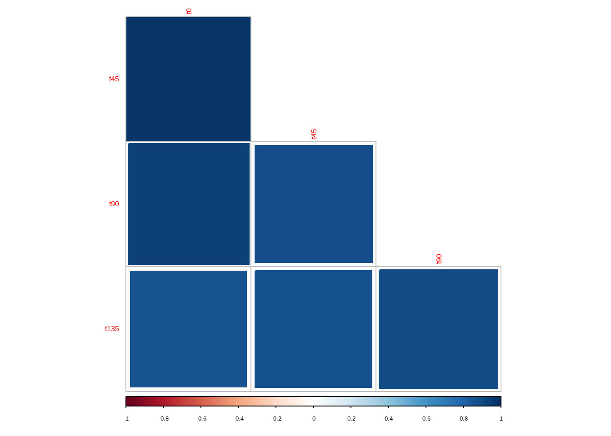

data12_3b <- foreign::read.spss("datasets/表12-3重复测量ANOVA.sav",
to.data.frame = T, reencode = "utf-8")
str(data12_3b)
## 'data.frame': 8 obs. of 4 variables:
## $ t0 : num 5.32 5.32 5.94 5.49 5.71 6.27 5.88 5.32
## $ t45 : num 5.32 5.26 5.88 5.43 5.49 6.27 5.77 5.15
## $ t90 : num 4.98 4.93 5.43 5.32 5.43 5.66 5.43 5.04
## $ t135: num 4.65 4.7 5.04 5.04 4.93 5.26 4.93 4.48
## - attr(*, "variable.labels")= Named chr(0)
## ..- attr(*, "names")= chr(0)
## - attr(*, "codepage")= int 936
head(data12_3b)
## t0 t45 t90 t135
## 1 5.32 5.32 4.98 4.65
## 2 5.32 5.26 4.93 4.70
## 3 5.94 5.88 5.43 5.04
## 4 5.49 5.43 5.32 5.04
## 5 5.71 5.49 5.43 4.93
## 6 6.27 6.27 5.66 5.2616 球对称检验
球对称检验在孙振球《医学统计学》中是作为重复测量方差分析中的一个知识点出现的，并没有单独介绍，我这里单独拎出来是因为当初的学习使用R语言进行球形检验的时候，费了很大的精力（当时网上资源很少）。
在重复测量设计（Repeated Measures Design）的方差分析中，球对称性检验（Sphericity Test，也称“球形假设”检验）是一个关键的前提条件检验。其目的是判断各时间点（或处理水平）之间差值的方差是否相等，这是重复测量ANOVA正确进行F检验所必需的。
为什么需要检验球对称性？
因为在重复测量ANOVA中，误差项的自由度和F统计量的计算依赖于协方差结构的假设。如果球对称性不成立：
- F检验的I类错误率（假阳性）会膨胀（即更容易错误地拒绝原假设）；
- p值不再准确，可能导致错误结论。
换句话说：违反球对称性会使标准重复测量ANOVA的结果不可靠。比如，我们测量同一个病人，有时候仪器读数波动大，有时候波动小。球对称假设就是要求这种“波动”在所有时间点之间是均匀的。如果不均匀（违反假设），直接用普通方差分析就会“算不准”。
如果不满足球对称假设可采用以下方法：
1.使用校正自由度的方法（近似F检验）： - Greenhouse–Geisser 校正（较保守，推荐当ε<0.75）； - Huynh–Feldt 校正（较宽松，当ε>0.75 时使用）； - 其中ε（epsilon）是球对称性偏离程度的估计值，1.0表示完美符合，越接近0表示偏离越严重。Greenhouse–Geisser(GG)和Huynh–Feldt(HF)就是根据这个偏离程度来打补丁（校正P值）的。 2.使用多变量方差分析（MANOVA）： - MANOVA不依赖球对称假设，但对样本量和变量数有一定要求（如样本量需大于测量次数）。 3.使用混合效应模型（Linear Mixed Models）： - 可灵活指定协方差结构（如自回归、复合对称、未结构化等），是目前更推荐也更加主流的方法。
R语言作为专为统计而生的语言，R有一个自带的mauchly.test()函数就可以做球对称检验，更经典的方式是使用car::Anova实现。下面演示用法。
16.1 单因素重复测量
孙振球《医学统计学》第4版表12-3的数据，这是一个只有1组的，而且是一个不符合球对称假设的数据。
先读取数据：8名受试者分别在4个时间点的血糖值。
数据一共4列，就是4个时间点的血糖值（这个数据结构和随机区组设计非常像，受试者是区组因素，时间点是处理因素，这个不是本章内容重点就不说了）。画个图方便理解：
library(ggplot2)
library(tidyr)
suppressMessages(library(dplyr))
data12_3b %>%
dplyr::mutate(id = row_number()) %>%
pivot_longer(cols = 1:4,names_to = "times",values_to = "fbg") %>%
dplyr::mutate(times=factor(times,levels = c("t0","t45","t90","t135")),
id=factor(id)) %>%
ggplot(aes(times,fbg))+
geom_line(aes(group=id,color=id),linewidth=2)+
geom_point(aes(group = id, color=id),size=5)+
theme_bw()
重复测量设计区组内实验单位彼此不独立，如在上面这个数据中，每个受试者血糖浓度的是用4个时间点的测量值刻画的，同一受试者的重复测量结果是高度相关的。相关系数如下：
M <- cor(data12_3b)
M
## t0 t45 t90 t135
## t0 1.0000000 0.9789632 0.9367641 0.8607653
## t45 0.9789632 1.0000000 0.8818185 0.8750263
## t90 0.9367641 0.8818185 1.0000000 0.8997236
## t135 0.8607653 0.8750263 0.8997236 1.0000000
library(corrplot)
# 如果方块颜色深（相关系数高），说明数据波动大，很可能不满足球对称
corrplot(M,method='square',type='lower',diag=FALSE)
想要更加炫酷的相关矩阵可视化吗？点击corrplot包可视化相关矩阵详解
t0和t45之间的相关系数高达0.9789632，其他时间点之间的相关系数也很高。
OK，后面的理论知识就不介绍了，这不是本次内容的重点，下面直接演示球形检验的方法：
# 首先变成矩阵
mat12_3b <- as.matrix(data12_3b)
mat12_3b
## t0 t45 t90 t135
## [1,] 5.32 5.32 4.98 4.65
## [2,] 5.32 5.26 4.93 4.70
## [3,] 5.94 5.88 5.43 5.04
## [4,] 5.49 5.43 5.32 5.04
## [5,] 5.71 5.49 5.43 4.93
## [6,] 6.27 6.27 5.66 5.26
## [7,] 5.88 5.77 5.43 4.93
## [8,] 5.32 5.15 5.04 4.48
# 定义组内因子
time_info <- data.frame(Time=factor(c("t0","t45","t90","t135"),
levels = c("t0","t45","t90","t135")))
# 然后就可以进行球对称检验了
# idata必须是data.frame，idesign必须是以~开头的公式，描述组内设计
mauchly.test(lm(mat12_3b ~ 1), idata=time_info, idesign = ~ Time)
##
## Mauchly's test of sphericity
##
## data: SSD matrix from lm(formula = mat12_3b ~ 1)
## W = 0.0002313, p-value = 1.906e-06结果：Mauchly’s W = 0.0002313，P<0.001，拒绝球对称假设。
对于重复测量方差分析的球对称检验，无论单因素还是多因素，mauchly.test的正确调用逻辑必须包含以下三个要素，缺一不可：
object: 你的mlm模型（多元线性模型）（包含所有测量列）。idata: 一个数据框，列出组内因子的水平（如：T1, T2, T3, T4）。idesign: 一个公式，指出你要检验哪个因子的球形性（如：~Time）。
但是这个结果和car::Anova的结果可能有差别（也是对的，背后原理太复杂了，我和Gemini对该问题进行了一次酣畅淋漓的讨论，感兴趣的可以点击链接观看：https://gemini.google.com/share/51da32f5d0a4），如果你要写论文用，建议还是使用car::Anova的结果。
car::Anova的实现方式如下（W = 0.06273）：
# 使用3型平方和时一定要加上这句代码，不然可能得到错误的结果！
options(contrasts = c("contr.sum", "contr.poly"))
suppressMessages(library(car))
# 使用Anova()进行重复测量方差分析，并启用球形检验
res <- Anova(lm(mat12_3b ~ 1), idata = time_info,
idesign = ~Time, type = "III")
# 查看球形检验结果
summary(res, multivariate = FALSE)
##
## Univariate Type III Repeated-Measures ANOVA Assuming Sphericity
##
## Sum Sq num Df Error SS den Df F value Pr(>F)
## (Intercept) 914.53 1 2.53170 7 2528.623 3.221e-10 ***
## Time 2.96 3 0.26182 21 79.141 1.304e-11 ***
## ---
## Signif. codes: 0 '***' 0.001 '**' 0.01 '*' 0.05 '.' 0.1 ' ' 1
##
##
## Mauchly Tests for Sphericity
##
## Test statistic p-value
## Time 0.06273 0.0082069
##
##
## Greenhouse-Geisser and Huynh-Feldt Corrections
## for Departure from Sphericity
##
## GG eps Pr(>F[GG])
## Time 0.52827 5.368e-07 ***
## ---
## Signif. codes: 0 '***' 0.001 '**' 0.01 '*' 0.05 '.' 0.1 ' ' 1
##
## HF eps Pr(>F[HF])
## Time 0.6573076 2.890609e-08该函数会直接给出方差分析的结果以及球对称检验的结果。
本例 Mauchly’s W = 0.06273，P<0.001，拒绝球对称假设。
此时你可以查看GG法或HF法校正的结果，Greenhouse-Geisser法校正后的球对称系数ε=0.52827，Huynh-Feldt法校正后的球对称系数ε=0.6573076，本次两个校正结果的P值均小于0.05，因此可认为不同时间点的血糖值有差别。
如果你想让mauchly.test的结果也变得和car::Anova一样，你必须介入它的矩阵生成过程。可以利用contr.poly（正交多项式对比）并手动正交化：
# 手动生成4个水平的标准正交对比矩阵
M_manual <- qr.Q(qr(contr.poly(4)))
# 传入M参数（会覆盖 idata/idesign 的默认逻辑）
mauchly.test(lm(mat12_3b ~ 1), M = M_manual)
##
## Mauchly's test of sphericity
##
## data: SSD matrix from lm(formula = mat12_3b ~ 1)
## W = 0.06273, p-value = 0.00820716.2 两因素重复测量
这是一个两因素重复测量设计，该数据是符合球对称假设的。
将手术要求基本相同的15名患者随机分3组，在手术过程中分别采用A、B、C三种麻醉诱导方法，在T0（诱导前）、T1、T2、T3、T4五个时相测量患者的收缩压，试进行方差分析。
data12_3 <- foreign::read.spss("datasets/例12-03.sav",to.data.frame = T)
str(data12_3)
## 'data.frame': 15 obs. of 7 variables:
## $ No : num 1 2 3 4 5 6 7 8 9 10 ...
## $ group: Factor w/ 3 levels "A","B","C": 1 1 1 1 1 2 2 2 2 2 ...
## $ t0 : num 120 118 119 121 127 121 122 128 117 118 ...
## $ t1 : num 108 109 112 112 121 120 121 129 115 114 ...
## $ t2 : num 112 115 119 119 127 118 119 126 111 116 ...
## $ t3 : num 120 126 124 126 133 131 129 135 123 123 ...
## $ t4 : num 117 123 118 120 126 137 133 142 131 133 ...
## - attr(*, "variable.labels")= Named chr [1:7] "\xd0\xf2\xba\xc5" "\xd7\xe9\xb1\xf0" "" "" ...
## ..- attr(*, "names")= chr [1:7] "No" "group" "t0" "t1" ...
head(data12_3)
## No group t0 t1 t2 t3 t4
## 1 1 A 120 108 112 120 117
## 2 2 A 118 109 115 126 123
## 3 3 A 119 112 119 124 118
## 4 4 A 121 112 119 126 120
## 5 5 A 127 121 127 133 126
## 6 6 B 121 120 118 131 137数据一共7列，第1列是患者编号，第2列是诱导方法（3种），第3-7列是5个时间点的血压。
下面使用mauchly.test进行球对称检验：
# 建立多元线性模型
mlm_model <- lm(cbind(t0,t1,t2,t3,t4) ~ group, data = data12_3)
# 定义组内因子
time_info <- data.frame(Time=factor(c("t0", "t1", "t2", "t3", "t4"),
levels = c("t0", "t1", "t2", "t3", "t4")))
# 然后就可以进行球对称检验了
# idata必须是data.frame，idesign必须是以~开头的公式，描述组内设计
mauchly.test(mlm_model, idata=time_info, idesign = ~ Time)
##
## Mauchly's test of sphericity
##
## data: SSD matrix from lm(formula = cbind(t0, t1, t2, t3, t4) ~ group, data = data12_3)
## W = 0.0032838, p-value = 4.985e-07这样得到的结论是：W=0.0032838,p-value=4.985e-07，不符合球对称假设。
如果和car::Anova结果不一致，建议你使用car::Anova的结果。
car::Anova的实现方式如下（W = 0.29307）：
# 使用3型平方和时一定要加上这句代码，不然可能得到错误的结果！
options(contrasts = c("contr.sum", "contr.poly"))
# 建立多元线性模型
mlm_model <- lm(cbind(t0,t1,t2,t3,t4) ~ group, data = data12_3)
# 定义组内因子
time_info <- data.frame(Time=factor(c("t0", "t1", "t2", "t3", "t4"),
levels = c("t0", "t1", "t2", "t3", "t4")))
res <- Anova(mlm_model, idata = time_info, idesign = ~Time, type = "III")
# # 查看球形检验结果
summary(res, multivariate = FALSE)
##
## Univariate Type III Repeated-Measures ANOVA Assuming Sphericity
##
## Sum Sq num Df Error SS den Df F value Pr(>F)
## (Intercept) 1155433 1 946.48 12 14649.2234 < 2.2e-16 ***
## group 912 2 946.48 12 5.7829 0.01743 *
## Time 2336 4 263.12 48 106.5576 < 2.2e-16 ***
## group:Time 838 8 263.12 48 19.1006 1.621e-12 ***
## ---
## Signif. codes: 0 '***' 0.001 '**' 0.01 '*' 0.05 '.' 0.1 ' ' 1
##
##
## Mauchly Tests for Sphericity
##
## Test statistic p-value
## Time 0.29307 0.17766
## group:Time 0.29307 0.17766
##
##
## Greenhouse-Geisser and Huynh-Feldt Corrections
## for Departure from Sphericity
##
## GG eps Pr(>F[GG])
## Time 0.67869 < 2.2e-16 ***
## group:Time 0.67869 4.263e-09 ***
## ---
## Signif. codes: 0 '***' 0.001 '**' 0.01 '*' 0.05 '.' 0.1 ' ' 1
##
## HF eps Pr(>F[HF])
## Time 0.896371 4.649080e-21
## group:Time 0.896371 2.041727e-11Mauchly’s W = 0.29307，p=0.17766>0.05，符合球对称假设。
如果你想让mauchly.test的结果也变得和car::Anova一样，你必须介入它的矩阵生成过程。可以利用contr.poly（正交多项式对比）并手动正交化：
# 手动生成 4 个水平的标准正交对比矩阵
M_manual <- qr.Q(qr(contr.poly(5)))
# 传入 M 参数（这会覆盖 idata/idesign 的默认逻辑）
mauchly.test(mlm_model, M = M_manual)
##
## Mauchly's test of sphericity
##
## data: SSD matrix from lm(formula = cbind(t0, t1, t2, t3, t4) ~ group, data = data12_3)
## W = 0.29307, p-value = 0.1777这样结果就一样了！
还有一点需要注意，如果时间因素只有2个水平，那么函数不会进行球形检验，此时默认球形假设成立。